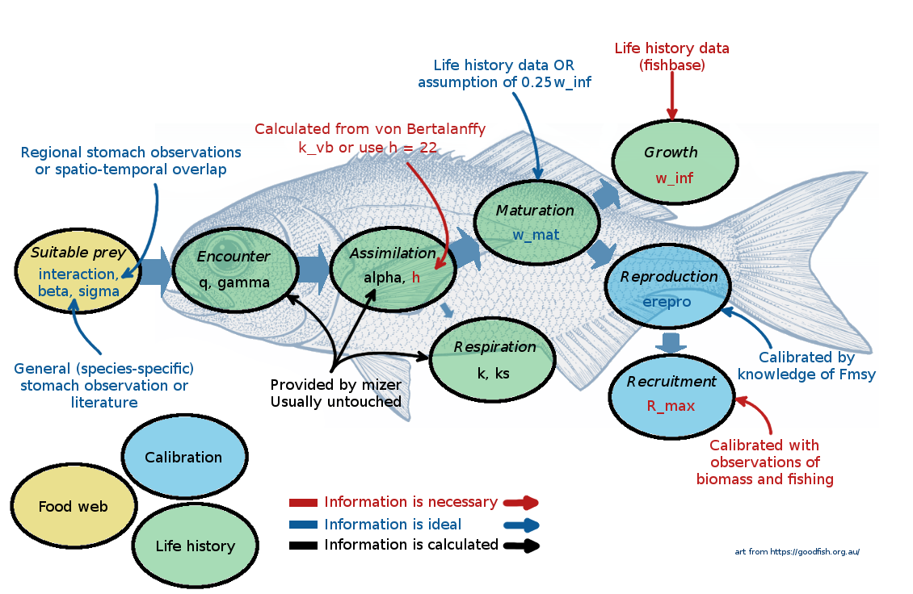

How do we decide which species to include in the model? There are many ways to approach it and no clearly set rules. Of course you want to include species that you are interested in, but then also perhaps some other important species in the ecosystem. Mizer actually has a powerful framework that allows you to explicitly model only your focus species and represent the rest of the ecosystem with some ‘background’ species. The sizes and abundances of these ‘background’ species are assumed to follow the power law, so that the total community biomass approximately represents the Sheldon spectrum. This is only mentioned here for your information, as we will not go into these details during this week.
If you have your own ecosystem that you want to model during this week, then you also have your own list of species. Ideally you may want to have somewhere around 4 to 20 species, as this allows for interesting but also tractable dynamics (although tracking processes in all 20 species might be quite challenging). For the Curonian Lagoon model we selected key ecosystem fish species that are commonly observed in scientific monitoring surveys, and which live and reproduce in the ecosystem (as compared to several migratory species, which can be abundant briefly don’t have a big role in the ecosystem in the long term).
The list of species and their general feeding habits or trophic group are listed below. We include scientific and model name, the latter representing a short name that we can conveniently use and display in plots.
Scientific name
Model name
Trophic group
Pungitius pungitius, Alburnus alburnus
smallfish
planktivore
Gymnocephalus cernua
ruffe
benthivore
Abramis brama, Blicca bjoerkna
breams
benthivore
Rutillus rutillus
roach
benthivore
Vimba vimba
vimba
benthivore
Carassius carassius
carassius
benthivore
Perca fluviatilis
perch
omnivore
Sander lucioperca
pikeperch
predator
Lota lota
burbot
predator
Esox lucius, Aspius aspius
predators
predator
Essential parameters
At this point it might be useful to go back and rewatch the second half of Ken Andersen’s introductory lecture, which explains species parameters used in mizer. It is great how mizer can start building a model with only very few species parameters! For most other parameters, if values are not supplied by the user, mizer will fill them with default values using size-based theory or species averages.
There are really only four parameters that the user should provide:
Species names
Asymptotic body size w_inf
Von Bertalanffy growth rate k_vb or species maximum intake rate coefficient h You learned about it in the introductory lecture by Ken Andersen. Even if you provide h values, you might still want to include k_vb in your species parameter file, because it can be used to plot modelled versus expected growth rates.
Danger
Von Bertalanffy growth function
The growth curve of a fish is commonly reported as a von Bertalanffy growth curve. The von Bertalanffy curve describes the length of a fish as a function of two parameters; the asymptotic length L_\infty and the von Bertalanffy growth coefficient K (k_vb in mizer):
L_{(t)} = L_\infty (1-e^{-Kt})
where t is the age. L_\infty represents the asymptotic length and K is an intantaneous annual growth rate. This value shows how quickly a species will approach its asymptotic length. In many species 1/K gives an approximat age at maturation, although this can vary.
Mizer, however, uses two other parameters, W_\infty (w_inf in Mizer) and h, where W_\infty represents the asymptotic weight and h the size-scaled maximum consumption rate. Ken Andersen discusses K and h in his introductory lecture. Fortunately, the two sets of parameters are related, and one can derive h and W_\infty from von Bertalanffy K and L_\infty.
The parameter h represents the maximum consumption rate of a fish, scaled by size. The value of h varies between 4 – 400, with a geometric mean around 22 g^{-0.25}/year across all fish species (Andersen 2019, chap. 2 and 11). If we have reliable von Bertalanffy growth curve values, we can derive a more precise estimate of h as: h \approx 4.75 K\cdot L_\infty^{0.75} (with K given in 1/years and L_\infty in cm).
Von Bertalanffy growth function is widely used in fisheries and ecology. However, it should be treated with some caution. To estimate the growth function coefficients reliably we need sufficient amounts of data from young and old individuals. The latter is often not the case for intensively fished species, because old fish are simply not present in the ecosystem. If we do not have old fish in the sample the asymptotic length L_\infty cannot be properly estimated. As a result, estimates of K will also vary extensively across samples. You can see that for yourself in our exercise below.
A vector of species biomasses to be provided in the biomass_observed column. This data are not essential and mizer will run without it, but you won’t be able to calibrate your model to a realistic system without some information on relative species abundances and biomasses. Note, the biomass_observed reflects the average species biomasses in your model system for the period that you want to calibrate your system to.
Important
How to get observed biomasses?
To calibrate the rate of reproduction (the rate at which eggs are entering the first size class in each species), mizer needs some information about species abundance or biomasses. Multi-species models are often calibrated using average observed biomases or average spawning stock biomasses of species. The units of the area or volume over which these biomasses were observed depend on your choice, mizer does not care about it (see section Units in mizer in this reference page). Sometimes we can use relative biomasses, which scale the relative abundances of species in the model. Remember, these are just average values, not time series of observations.
Observed biomasses could be derived from scientific surveys, underwater surveys or other observations or knowledge about relative biomasses of species. In well studied systems you might have data about biomass estimates, catches and fishing mortality from stock assessments. These type of data are often used to calibrate mizer models, although we need to be aware of the fact that stock assessment estimates are also model estimates and come with their own assumptions (e.g. they are single species estimates).
Other species parameters
There are many other parameters that are used to describe species properties, but mizer has default ways to calculate them based on the size theory expectations. You can read about the theory in various publications or in the excellent Ken H Andersen book “Fish Ecology, Evolution, and Exploitation” (2019). So you don’t need to provide them, but you do need to understand the defaults and think whether you are happy with them. Mizer help pages provide a good summary of species parameters and links to functions that use these parameters.
Predation kernel parameters
Predator-prey mass ratio beta and width of predation kernel sigma The default values in mizer are beta = 30 and sigma = 2. However, higher beta values are usually in most mizer models for predatory fish and for fish that feed on plankton or benthic invertebrates these values are often in the range of 10000 or more. For example in the Curonian lagoon, bream and roach are benthivorous species. A 500g bream will feed on small invertebrates, like amphipods. If we use the generic length-weight conversion then a 0.5cm amphipod will weigh about 0.01*0.5^3 = 0.00125 grams. This gives the beta value at 2500000. However, beta represents a preferred predator prey size ratio, not the realised one. Most species prefer to eat larger prey, but their diets are dominated by small prey, since smaller individuals are more common. So beta values should generally be smaller than based on diet observations. For sigma many models used a value smaller than 2, but note that small sigma values make the steady state less stable (because predation is centered on a smaller range of prey sizes, exerting higher predation pressure on a small range of prey sizes. Again planktivores and benthivores would normally have large sigma values and predators smaller values. Let’s look at the beta and sigma values in the example North Sea model that comes with mizer
* checking for file ‘/tmp/Rtmpb0yAKZ/remotes1d1225830e41f/sizespectrum-mizerExperimental-2465461/DESCRIPTION’ ... OK
* preparing ‘mizerExperimental’:
* checking DESCRIPTION meta-information ... OK
* checking for LF line-endings in source and make files and shell scripts
* checking for empty or unneeded directories
* building ‘mizerExperimental_2.3.1.tar.gz’
For the Curonian lagoon model we set the following beta values: we assume 100 for predatory fish, 10000 for large benthivores, 8000 and 600 for smaller benthivores and 5000 for planktivorous fish. Similarly we assume large sigma for planktivores and benthivores, and smaller values for predators.
Rows: 9 Columns: 16
── Column specification ────────────────────────────────────────────────────────
Delimiter: ","
chr (4): species, resilience, latinName, funcgr
dbl (12): w_inf, w_mat, k_vb, beta, sigma, biomass_cutoff, biomass_observed,...
ℹ Use `spec()` to retrieve the full column specification for this data.
ℹ Specify the column types or set `show_col_types = FALSE` to quiet this message.
Parameters setting size dependent intake, maintenance and mortality rates
Species search volume is set from the search rate constant gamma and its body size scaling exponent q If no values are provided gamma and q are set so that when prey abundance is described by the power law with the exponent lambda, food search rate will lead to the juvenile feeding level f0.
Species maximum intake is set using constant h and body size scaling exponent n If no value is provided the coefficient h is set so as to achieve Von-Bertalanffy growth rate based estimate of maturity size at a given maturity age (given the feeding level f0). In multi-species models the exponent n is by default set to 2/3.
Species metabolic rate is set from the constants ks and body size scaling exponent p If no values are provided the coefficient ks is set so that at maturation size metabolic expenditure requires fc (critical feeding) level of maximum intake. In multi-species models the exponent p is by default set to 0.7. Maintenance expenditure can also include activity related energetic costs, using species activity coefficient k which scales linearly with body size (exponent of 1). By default this value is set to 0 and most mizer models do not include it.
Species external (also called background or baseline) size-independent mortality rate constant z0 This parameter determines the background mortality that affects all species size classes in the same way (it is a flat rate across sizes). If no values are provided mizer assumes that species with small maximum body sizes have much higher baseline mortality rate. For example, a species with w_inf = 35 g will have z0 = 0.18, a species with w_inf = 150g will have z0 = 0.11 and a species with w_inf = 14kg will have z0 = 0.025.
For the Curonian lagoon model we will let mizer set default values of size based rates and will assume that, as for mizer defaults, larval feeding level f0 = 0.6 and critical feeding level fc = 0.2.
Let’s have a look at how mizer will set them up. For that we will need to call newMultispeciesParams() function and provide species parameter and species interaction dataframes. We will talk about about the interaction data late, so ignore it for now.
Note: Dimnames of interaction matrix do not match the order of species names in the species data.frame. I am now ignoring your dimnames so your interaction matrix may be in the wrong order.
No h provided for some species, so using f0 and k_vb to calculate it.
No ks column so calculating from critical feeding level.
Using z0 = z0pre * w_inf ^ z0exp for missing z0 values.
species_params(curon)|>select(species, w_inf, funcgr, k_vb, ks, h, gamma, p, q, n, z0)
## ASTA - why is there no f0 in the species params file? ## ASTA - I seem to be getting different q values when i run this code
We can see that mizer set default value of f0 to 0.6 and calculated other parameters. Have a look at how the instantaenous external (background) mortality z0 varies across species.
Important
Body size scaling exponents
You can also see that, unlike with the idealised trait-based model, the maximum intake, search rate and metabolism exponents are not set at 3/4 . There is a lot of debate about the correct values for these exponents. Some schools of thought argue that energy intake should scale with individual’s surface area (exponent of 2/3 ) whereas energy expenditure should scale with body volume (exponent of 1 ). Others suggest that food intake and metabolism exponents should both scale with 3/4 . There are no clear rules and these exponents in reality are likely to vary across species. But in most cases mizer users just go with defaults.
Reproduction related parameters
Species maturation body weight is set with w_mat. Usually you would want to set them up yourself from life-history data, but if no data is available mizer will use 0.25 * w_inf For the Curonian lagoon model we selected maturation size from available biological data. The reproduction investment parameter m determines the scaling of the investment into reproduction for mature individuals. By default m = 1 which means that after maturation the rate at which individual fish invests energy into reproduction scales linearly with size (if you want more information, you can find it here). This default can be changed to another value if different scaling is preferred (e.g. in case you might want to explore hyper-allometric reproduction investment options). The steepness of population level energy allocation to reproduction is determined by w_mat25 and w_mat as you have learned in the previous tutorial on single species spectra.
Species minimum body size in the model w_min If no value is provided mizer assumes 0.001
Species reproduction parameters R_max and erepro. Mizer will set them to infinity and 1 respectively, but clearly these values are not good and will have to be tuned to achieved required numbers of larvae born into first size class and density dependence level (reproduction level). We will learn about these parameters and their tuning in the next tutorials.
You can also modify availability of the resource to each of your species, as we have learned during week 1. This is set by the parameter interaction_resource and this value is set to 1 by default.
Species feeding or satiation level at larval stage f0 If no value is provided mizer assumes 0.6.
Species food assimilation efficiency alpha If no value is provided mizer assumes 0.6
Species length-weight conversion coefficients a and b These coefficients are needed if maximum or maturation body size are provided in length or if we estimate h from Von Bertalanffy v_bk. If no values are provided mizer will assume 0.01 and 3, but for the Curonian lagoon model we collect these data from FishBase.
The asymptotic length and weight are related as: W_\infty = a \cdot L_\infty^b For many species length-weight conversion coefficients a and b are available on FishBase. Reasonable general values are: a = 0.01\ \mathrm{g/cm}^{-3} and b = 3.
Summary of key parameters
It is good to remember that, even though there are many parameters in mizer, you can start your model with just a few! However, if you don’t like defaults you can change them all. Advanced users can even overwrite mizer functions that calculate parameters. If you feel you need more advanced reading you can explore it here

Parameters defining fishing
Because most ecosystems are fished and we are calibrating to biomasses observed under some fishing level, we usually also need to include information on fishing intensity and fishing gear.
In mizer, fishing mortality rates at size for each gear are calculated as
F = catchability\cdot selectivity \cdot effort
In complicated models we can have different gears, each with its own effort, fishing different species with different selectivity and catchability. Gear selectivity curve can have different shapes (logistic, knife-edge and others). You can read more about this here. For the simple Curonian lagoon model we will assume only one gear fishing with knife-edge selectivity at maturation size and average fishing mortality rate of 0.3. We will use one effort value because we only have one gear, but by adjusting species-specific catchability we can adjust fishing mortality for each species. For example, smallfish and ruffe in our model are not fished, so we will set their catchability to 0. Some species live close to the shore or are otherwise less vulnerable to commercial fishing, so we will set their cathability to 0.5. So the final list of
Exercise 1: collecting species parameters from FishBase
You might have noticed that our species parameter file is missing one species that was listed in the initial table - roach (Rutillus rutillus). This is actually the most abundant species in the ecosystem. But we are missing its parameter values.
You goal in this exercise is to find parameter for roach. We will use FishBase, where many modellers get their species parameters.
In this exercise please open the curonian_species_params_exercise.csv file, go to FishBase, use the knowledge you gained so far and:
1) Fill the NA values for roach
2) Look up values for breams and see if you agree with our selection of parameter values.
Important! Make sure you check all the different sources of information that FishBase has. Scroll all the way down to “More information” section and explore Length-weight, Fecundity, Age/size, Food items, Diet and especially Growth sections.
Please commit this .csv file and push it to GitHub (just select the file as you selected other modified files). You will use the parameters that you found in the next tutorial.
Species interaction matrix
The next thing we will need to provide to mizer is a species interaction matrix. This matrix can include three different aspects (or a combination of all of them):
Spatial and temporal overlap of species in a large ecosystem. This way the interaction matrix is set based on e.g. species occurrences in various fisheries surveys or observations and reflect the frequency of how often same species are found in same surveys. This is how species interactions are set up in the example North Sea model, which comes with mizer installation. Let’s check it (we will round the values to two decimal points). The North Sea interaction matrix file is called NS_interaction and comes with mizer installation.
Species diet preferencesor trophic groups. Sometimes we know that certain species do not eat other species. For example, some species are strictly bentivorous or herbivorous and they never eat any other fish, not even their larvae. In other cases we might have good evidence for specific diet preferences, although ideally such evidence should come from food selection experiments and these are very rare and maybe too specific to certain conditions. It is important to know that diet contents do not necessarily reflect preferences, but realised feeding. A species might prefer to eat bananas, but if nothing else is available it will eat other fish. The species interaction matrix, if reflecting diet preferences, should reflect preferred diets, not realised diets.
Species predator avoidance behaviour or vulnerability. Some species may be less available to other species because they are good at hiding, have spikes, or live in large schools which reduces their vulnerability to predation compared to solitary species. This could also be included in the species interaction matrix, but in the prey column.
For our Curonian lagoon example model we used existing ecological knowledge and set up species interaction matrix as follows:
New names:
Rows: 10 Columns: 11
── Column specification
──────────────────────────────────────────────────────── Delimiter: "," chr
(1): ...1 dbl (10): smallfish, ruffe, breams, roach, vimba, carassius, perch,
pikeperc...
ℹ Use `spec()` to retrieve the full column specification for this data. ℹ
Specify the column types or set `show_col_types = FALSE` to quiet this message.
• `` -> `...1`
curon_interaction
In our simple case the interaction matrix has two main components:
We either assume that prey (in columns) is available to a predator (in rows), hence the interaction matrix value for that predator row is set to 1.
We assume that strictly benthivorous fish species (breams, roach, vimba, carassius) cannot eat any other fish. This is based on the available knowledge about feeding habits. For these four species interaction matrix values are set to 0 for all fish.